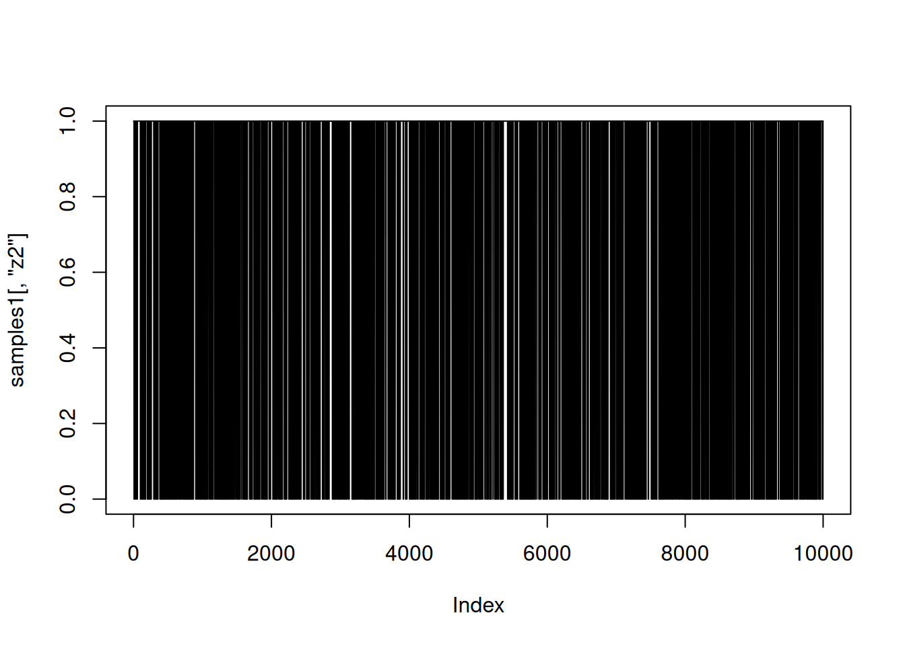
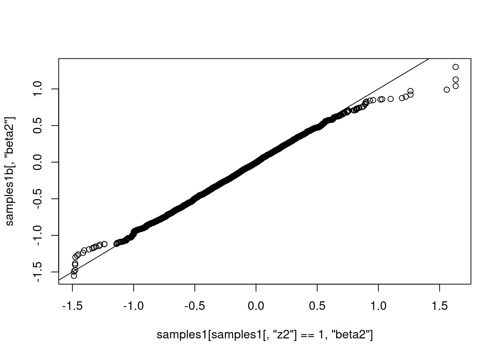
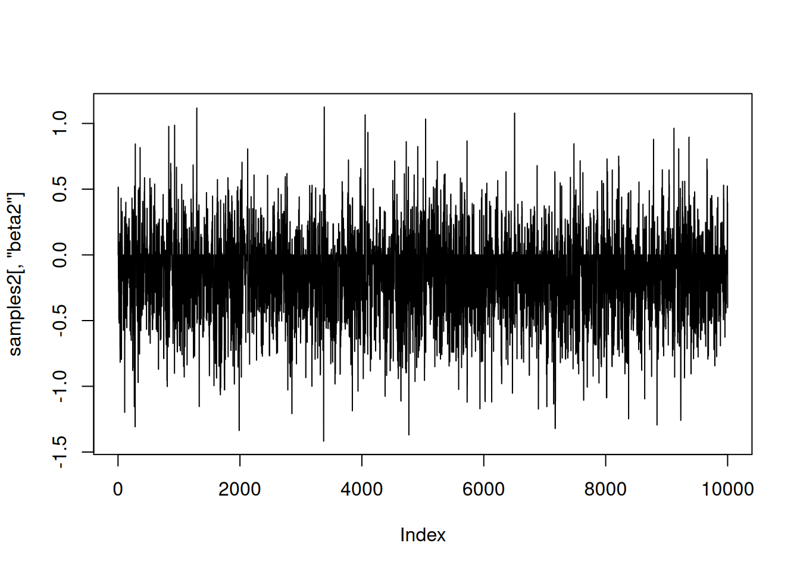
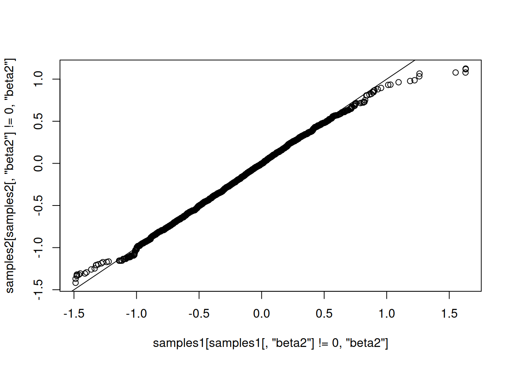

N <- 20
x1 <- runif(N, -1, 1)
x2 <- runif(N, -1, 1)
Y <- rnorm(N, 1.5 + 0.5 * x1, sd = 1)Writing reversible jump MCMC in NIMBLE
tutorial
R
Writing reversible jump MCMC samplers in NIMBLE
Introduction
Reversible jump Markov chain Monte Carlo (RJMCMC) is a powerful method for drawing posterior samples over multiple models by jumping between models as part of the sampling. For a simple example that I’ll use below, think about a regression model where we don’t know which explanatory variables to include, so we want to do variable selection. There may be a huge number of possible combinations of variables, so it would be nice to explore the combinations as part of one MCMC run rather than running many different MCMCs on some chosen combinations of variables. To do it in one MCMC, one sets up a model that includes all possible variables and coefficients. Then “removing” a variable from the model is equivalent to setting its coefficient to zero, and “adding” it back into the model requires a valid move to a non-zero coefficient. Reversible jump MCMC methods provide a way to do that.
Reversible jump is different enough from other MCMC situations that packages like WinBUGS, OpenBUGS, JAGS, and Stan don’t do it. An alternative way to set up the problem, which does not involve the technicality of changing model dimension, is to use indicator variables. An indicator variable is either zero or one and is multiplied by another parameter. Thus when the indicator is 0, the parameter that is multipled by 0 is effectively removed from the model. Darren Wilkinson has a nice old blog post on using indicator variables for Bayesian variable selection in BUGS code. The problem with using indicator variables is that they can create a lot of extra MCMC work and the samplers operating on them may not be well designed for their situation.
NIMBLE lets one program model-generic algorithms to use with models written in the BUGS language. The MCMC system works by first making a configuration in R, which can be modified by a user or a program, and then building and compiling the MCMC. The nimbleFunction programming system makes it easy to write new kinds of samplers.
The aim of this blog post is to illustrate how one can write reversible jump MCMC in NIMBLE. A variant of this may be incorporated into a later version of NIMBLE.
Example model
For illustration, I’ll use an extremely simple model: linear regression with two candidate explanatory variables. I’ll assume the first, x1, should definitely be included. But the analyst is not sure about the second, x2, and wants to use reversible jump to include it or exclude it from the model. I won’t deal with the issue of choosing the prior probability that it should be in the model. Instead I’ll just pick a simple choice and stay focused on the reversible jump aspect of the example. The methods below could be applied en masse to large models.
Here I’ll simulate data to use:
I’ll take two approaches to implementing RJ sampling. In the first, I’ll use a traditional indicator variable and write the RJMCMC sampler to use it. In the second, I’ll write the RJMCMC sampler to incorporate the prior probability of inclusion for the coefficient it is sampling, so the indicator variable won’t be needed in the model.
First we’ll need nimble:
library(nimble)nimble version 1.4.0 is loaded.
For more information on NIMBLE and a User Manual,
please visit https://R-nimble.org.
Attaching package: 'nimble'The following object is masked from 'package:stats':
simulateThe following object is masked from 'package:base':
declareRJMCMC implementation 1, with indicator variable included
Here is BUGS code for the first method, with an indicator variable written into the model, and the creation of a NIMBLE model object from it. Note that although RJMCMC technically jumps between models of different dimensions, we still start by creating the largest model so that changes of dimension can occur by setting some parameters to zero (or, in the second method, possibly another fixed value).
simpleCode1 <- nimbleCode({
beta0 ~ dnorm(0, sd = 100)
beta1 ~ dnorm(0, sd = 100)
beta2 ~ dnorm(0, sd = 100)
sigma ~ dunif(0, 100)
z2 ~ dbern(0.8) ## indicator variable for including beta2
beta2z2 <- beta2 * z2
for(i in 1:N) {
Ypred[i] <- beta0 + beta1 * x1[i] + beta2z2 * x2[i]
Y[i] ~ dnorm(Ypred[i], sd = sigma)
}
})
simpleModel1 <- nimbleModel(simpleCode1,
data = list(Y = Y, x1 = x1, x2 = x2),
constants = list(N = N),
inits = list(beta0 = 0, beta1 = 0, beta2 = 0, sigma = sd(Y), z2 = 1))Defining modelBuilding modelSetting data and initial valuesRunning calculate on model
[Note] Any error reports that follow may simply reflect missing values in model variables.Checking model sizes and dimensionsNow here are two custom samplers. The first one will sample beta2 only if the indicator variable z2 is 1 (meaning that beta2 is included in the model). It does this by containing a regular random walk sampler but only calling it when the indicator is 1 (we could perhaps set it up to contain any sampler to be used when z2 is 1, but for now it’s a random walk sampler). The second sampler makes reversible jump proposals to move beta2 in and out of the model. When it is out of the model, both beta2 and z2 are set to zero. Since beta2 will be zero every time z2 is zero, we don’t really need beta2z2, but it ensures correct behavior in other cases, like if someone runs default samplers on the model and expects the indicator variable to do its job correctly. For use in reversible jump, z2’s role is really to trigger the prior probability (set to 0.8 in this example) of being in the model.
Don’t worry about the warning message emitted by NIMBLE. They are there because when a nimbleFunction is defined it tries to make sure the user knows anything else that needs to be defined.
RW_sampler_nonzero_indicator <- nimbleFunction(
contains = sampler_BASE,
setup = function(model, mvSaved, target, control) {
regular_RW_sampler <- sampler_RW(model, mvSaved, target = target, control = control$RWcontrol)
indicatorNode <- control$indicator
},
run = function() {
if(model[[indicatorNode]] == 1) regular_RW_sampler$run()
},
methods = list(
reset = function() {regular_RW_sampler$reset()}
))
RJindicatorSampler <- nimbleFunction(
contains = sampler_BASE,
setup = function( model, mvSaved, target, control ) {
## target should be the name of the indicator node, 'z2' above
## control should have an element called coef for the name of the corresponding coefficient, 'beta2' above.
coefNode <- control$coef
scale <- control$scale
calcNodes <- model$getDependencies(c(coefNode, target))
},
run = function( ) { ## The reversible-jump updates happen here.
currentIndicator <- model[[target]]
currentLogProb <- model$getLogProb(calcNodes)
if(currentIndicator == 1) {
## propose removing it
currentCoef <- model[[coefNode]]
logProbReverseProposal <- dnorm(0, currentCoef, sd = scale, log = TRUE)
model[[target]] <<- 0
model[[coefNode]] <<- 0
proposalLogProb <- model$calculate(calcNodes)
log_accept_prob <- proposalLogProb - currentLogProb + logProbReverseProposal
} else {
## propose adding it
proposalCoef <- rnorm(1, 0, sd = scale)
model[[target]] <<- 1
model[[coefNode]] <<- proposalCoef
logProbForwardProposal <- dnorm(0, proposalCoef, sd = scale, log = TRUE)
proposalLogProb <- model$calculate(calcNodes)
log_accept_prob <- proposalLogProb - currentLogProb - logProbForwardProposal
}
accept <- decide(log_accept_prob)
if(accept) {
copy(from = model, to = mvSaved, row = 1, nodes = calcNodes, logProb = TRUE)
} else {
copy(from = mvSaved, to = model, row = 1, nodes = calcNodes, logProb = TRUE)
}
},
methods = list(reset = function() {
})
)Now we’ll set up and run the samplers:
mcmcConf1 <- configureMCMC(simpleModel1)===== Monitors =====
thin = 1: beta0, beta1, beta2, sigma, z2
===== Samplers =====
RW sampler (1)
- sigma
conjugate sampler (3)
- beta0
- beta1
- beta2
binary sampler (1)
- z2mcmcConf1$removeSamplers('z2')
mcmcConf1$addSampler(target = 'z2',
type = RJindicatorSampler,
control = list(scale = 1, coef = 'beta2'))
mcmcConf1$removeSamplers('beta2')
mcmcConf1$addSampler(target = 'beta2',
type = 'RW_sampler_nonzero_indicator',
control = list(indicator = 'z2',
RWcontrol = list(adaptive = TRUE,
adaptInterval = 100,
scale = 1,
log = FALSE,
reflective = FALSE)))
mcmc1 <- buildMCMC(mcmcConf1)
compiled1 <- compileNimble(simpleModel1, mcmc1)Compiling
[Note] This may take a minute.
[Note] Use 'showCompilerOutput = TRUE' to see C++ compilation details.compiled1$mcmc1$run(10000)|-------------|-------------|-------------|-------------|
|-------------------------------------------------------|samples1 <- as.matrix(compiled1$mcmc1$mvSamples)Here is a trace plot of the beta2 (slope) samples. The thick line at zero corresponds to having beta2 removed from the model.
plot(samples1[,'beta2'], type = 'l')
And here is a trace plot of the z2 (indicator variable) samples.
plot(samples1[,'z2'], type = 'l')
The chains look reasonable.
As a quick check of reasonableness, let’s compare the beta2 samples to what we’d get if it was always included in the model. I’ll do that by setting up default samplers and then removing the sampler for z2 (and z2 should be 1).
mcmcConf1b <- configureMCMC(simpleModel1)===== Monitors =====
thin = 1: beta0, beta1, beta2, sigma, z2
===== Samplers =====
RW sampler (1)
- sigma
conjugate sampler (3)
- beta0
- beta1
- beta2
binary sampler (1)
- z2mcmcConf1b$removeSamplers('z2')
mcmc1b <- buildMCMC(mcmcConf1b) [Warning] No samplers assigned for 1 node, use conf$getUnsampledNodes() for node name.compiled1b <- compileNimble(simpleModel1, mcmc1b)Compiling
[Note] This may take a minute.
[Note] Use 'showCompilerOutput = TRUE' to see C++ compilation details.compiled1b$mcmc1b$run(10000)|-------------|-------------|-------------|-------------|
|-------------------------------------------------------|samples1b <- as.matrix(compiled1b$mcmc1b$mvSamples)
plot(samples1b[,'beta2'], type = 'l')qqplot(samples1[ samples1[,'z2'] == 1, 'beta2'], samples1b[,'beta2'])
abline(0,1)
That looks correct, in the sense that the distribution of beta2 given that it’s in the model (using reversible jump) should match the distribution of beta2 when it is
always in the model.
RJ implementation 2, without indicator variables
Now I’ll set up the second version of the model and samplers. I won’t include the indicator variable in the model but will instead include the prior probability for inclusion in the sampler. One added bit of generality is that being “out of the model” will be defined as taking some fixedValue, to be provided, which will typically but not necessarily be zero. These functions are very similar to the ones above.
Here is the code to define and build a model without the indicator variable:
simpleCode2 <- nimbleCode({
beta0 ~ dnorm(0, sd = 100)
beta1 ~ dnorm(0, sd = 100)
beta2 ~ dnorm(0, sd = 100)
sigma ~ dunif(0, 100)
for(i in 1:N) {
Ypred[i] <- beta0 + beta1 * x1[i] + beta2 * x2[i]
Y[i] ~ dnorm(Ypred[i], sd = sigma)
}
})
simpleModel2 <- nimbleModel(simpleCode2,
data = list(Y = Y, x1 = x1, x2 = x2),
constants = list(N = N),
inits = list(beta0 = 0, beta1 = 0, beta2 = 0, sigma = sd(Y)))Defining modelBuilding modelSetting data and initial valuesRunning calculate on model
[Note] Any error reports that follow may simply reflect missing values in model variables.Checking model sizes and dimensionsAnd here are the samplers (again, ignore the warning):
RW_sampler_nonzero <- nimbleFunction(
## "nonzero" is a misnomer because it can check whether it sits at any fixedValue, not just 0
contains = sampler_BASE,
setup = function(model, mvSaved, target, control) {
regular_RW_sampler <- sampler_RW(model, mvSaved, target = target, control = control$RWcontrol)
fixedValue <- control$fixedValue
},
run = function() { ## Now there is no indicator variable, so check if the target node is exactly
## equal to the fixedValue representing "not in the model".
if(model[[target]] != fixedValue) regular_RW_sampler$run()
},
methods = list(
reset = function() {regular_RW_sampler$reset()}
))
RJsampler <- nimbleFunction(
contains = sampler_BASE,
setup = function( model, mvSaved, target, control ) {
## target should be a coefficient to be set to a fixed value (usually zero) or not
## control should have an element called fixedValue (usually 0),
## a scale for jumps to and from the fixedValue,
## and a prior prob of taking its fixedValue
fixedValue <- control$fixedValue
scale <- control$scale
## The control list contains the prior probability of inclusion, and we can pre-calculate
## this log ratio because it's what we'll need later.
logRatioProbFixedOverProbNotFixed <- log(control$prior) - log(1-control$prior)
calcNodes <- model$getDependencies(target)
},
run = function( ) { ## The reversible-jump moves happen here
currentValue <- model[[target]]
currentLogProb <- model$getLogProb(calcNodes)
if(currentValue != fixedValue) { ## There is no indicator variable, so check if current value matches fixedValue
## propose removing it (setting it to fixedValue)
logProbReverseProposal <- dnorm(fixedValue, currentValue, sd = scale, log = TRUE)
model[[target]] <<- fixedValue
proposalLogProb <- model$calculate(calcNodes)
log_accept_prob <- proposalLogProb - currentLogProb - logRatioProbFixedOverProbNotFixed + logProbReverseProposal
} else {
## propose adding it
proposalValue <- rnorm(1, fixedValue, sd = scale)
model[[target]] <<- proposalValue
logProbForwardProposal <- dnorm(fixedValue, proposalValue, sd = scale, log = TRUE)
proposalLogProb <- model$calculate(calcNodes)
log_accept_prob <- proposalLogProb - currentLogProb + logRatioProbFixedOverProbNotFixed - logProbForwardProposal
}
accept <- decide(log_accept_prob)
if(accept) {
copy(from = model, to = mvSaved, row = 1, nodes = calcNodes, logProb = TRUE)
} else {
copy(from = mvSaved, to = model, row = 1, nodes = calcNodes, logProb = TRUE)
}
},
methods = list(reset = function() {
})
)Now let’s set up and use the samplers
mcmcConf2 <- configureMCMC(simpleModel2)===== Monitors =====
thin = 1: beta0, beta1, beta2, sigma
===== Samplers =====
RW sampler (1)
- sigma
conjugate sampler (3)
- beta0
- beta1
- beta2mcmcConf2$removeSamplers('beta2')
mcmcConf2$addSampler(target = 'beta2',
type = 'RJsampler',
control = list(fixedValue = 0, prior = 0.8, scale = 1))
mcmcConf2$addSampler(target = 'beta2',
type = 'RW_sampler_nonzero',
control = list(fixedValue = 0,
RWcontrol = list(adaptive = TRUE,
adaptInterval = 100,
scale = 1,
log = FALSE,
reflective = FALSE)))
mcmc2 <- buildMCMC(mcmcConf2)
compiled2 <- compileNimble(simpleModel2, mcmc2)Compiling
[Note] This may take a minute.
[Note] Use 'showCompilerOutput = TRUE' to see C++ compilation details.compiled2$mcmc2$run(10000)|-------------|-------------|-------------|-------------|
|-------------------------------------------------------|samples2 <- as.matrix(compiled2$mcmc2$mvSamples)And again let’s look at the samples. As above, the horizontal line at 0 represents having beta2 removed from the model.
plot(samples2[,'beta2'], type = 'l')
Now let’s compare those results to results from the first method, above. They should match.
mean(samples1[,'beta2']==0)[1] 0.186mean(samples2[,'beta2']==0)[1] 0.1939qqplot(samples1[ samples1[,'beta2'] != 0,'beta2'], samples2[samples2[,'beta2'] != 0,'beta2'])
abline(0,1)
They match well.
How to apply this for larger models.
The samplers above could be assigned to arbitrary nodes in a model. The only additional code would arise from adding more samplers to an MCMC configuration. It would also be possible to refine the reversible-jump step to adapt the scale of its jumps in order to achieve better mixing. For example, one could try this method by Ehlers and Brooks. We’re interested in hearing from you if you plan to try using RJMCMC on your own models.